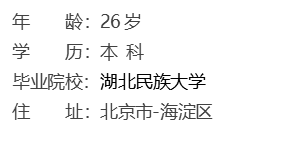
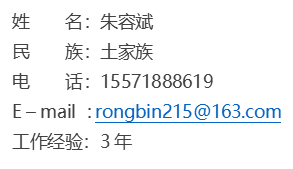

● 工作性质：全职
● 期望行业：IT电子商务/互联网
● 期望职业：Python爬虫工程师，Python开发工程师
● 期望薪资：面议
● 工作地区：北京
● 目前状况：离职，可随时到岗
2016.04 – 2019.02 武汉数科科技有限公司 爬虫工程师
● 负责公司内部员工管理网站维护和二次开发（使用Django框架）；
● 参与公司通用爬虫项目的研发和制作（使用分布式爬虫和异步架构）；
● 与客户沟通探讨抓取的数据格式；
● 对获取的数据进行测试；
● 爬虫后期的ETL工作（包括数据格式的转换，数据的加载，清洗和整理）；
● 熟悉应用scrapy框架
● 熟悉分布式爬取
● 熟悉各种反爬虫机制与反爬策略
● 熟悉的页面抽取技术：xpath、bs4、re、ajax
● 熟悉数据库：Mysql、Mongodb、Redis
● 熟练使用selenium
● 熟练使用requests,urllib库
● 熟练运用Python编程语言和面向对象编程
● 熟悉Python垃圾回收机制
● 熟练掌握Python标准库和常用第三方库
● 熟悉Linux常用命令
● 熟练Fidder抓包工具
◆敏感词汇过滤系统
项目描述：
该项目是与某大型软件公司合作的，客户提供了指定的国外的门户网的链接，对他们提供的国外新闻网站进行数据监控，
读取与中国相关的新闻报道，在检索网站的同时与特殊字库进行比对，把含有敏感词汇的新闻和重要报道的数据进行采
集和汇总，并经过初期的数据过滤，清洗，筛选等操作完成数据处理，并提交到相关项目组。
责任描述：
1：使用IP代理，同时设置timeout延时时间5秒解决IP限制问题，
2：每次请求都随机更换 User-Agent，
3：使用scrapy框架获取所需数据，
4：采用Selenium的技术解决ajax动态加载的数据，
5：使用Xpath、CSS、re等选择器对有效数据进行提取，
6：对程序进行多次测试，修改维护，确保程序达到要求，
7：对获取的数据进行测试，确保数据的完整性，准确性，
8：对读取的数据进行语言分析，与关键字库进行比对，如果安全则保留历史记录，如果含有敏感词汇则存放到另一个库，进行二次确认，提交到相关部门，
9：使用logging模块编写监控程序进行爬虫监控，并根据日期定向输出日志到log文件，
本人做Python相关工作三年了，主要从事的是互联网金融这一块数据的抓取。
前期负责公司内部员工管理网站维护和二次开发（使用Django框架）。对面向对象、MVC有深刻的理解，熟练使用常用软件
建模工具进行系分析和设计。
第二年因公司需要接触了爬虫。从最初简单的封锁IP到现在的Ajax动态加载Cookie限制，网站模拟登陆，验证码等，熟悉
xpath，beautiful soup，re等网页解析工具。熟练使用selenium抓取动态网页。了解分布式爬取，通用爬虫。接触过很多
的反爬虫机制，有丰富的项目经验。熟练scrapy框架，MySQL，mongdb，redis数据库。
我希望能够找一个更好的平台，挑战更美好的事业， 很荣幸能够来到贵公司面试，希望我可以尽快加入贵公司，为公司作
出贡献。
写得好，不如说得好，说得好，不如做得好，干得好，不如干得巧。高质量＋好的方法＋正确的心态 是我的追求